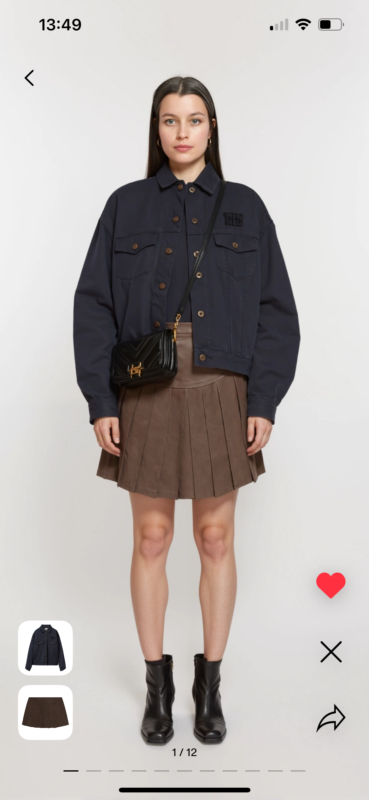
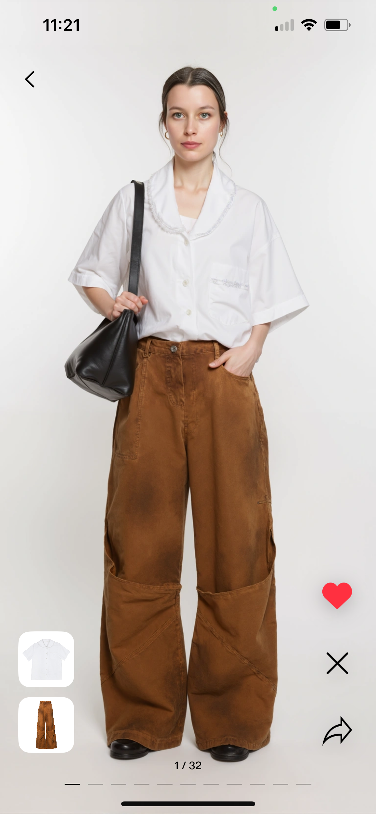
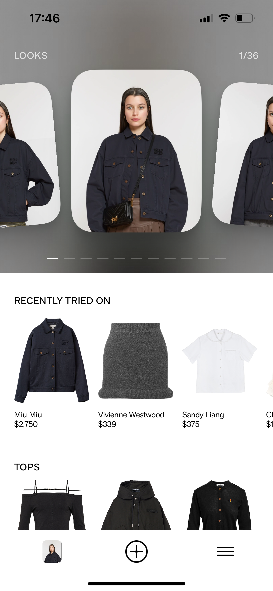
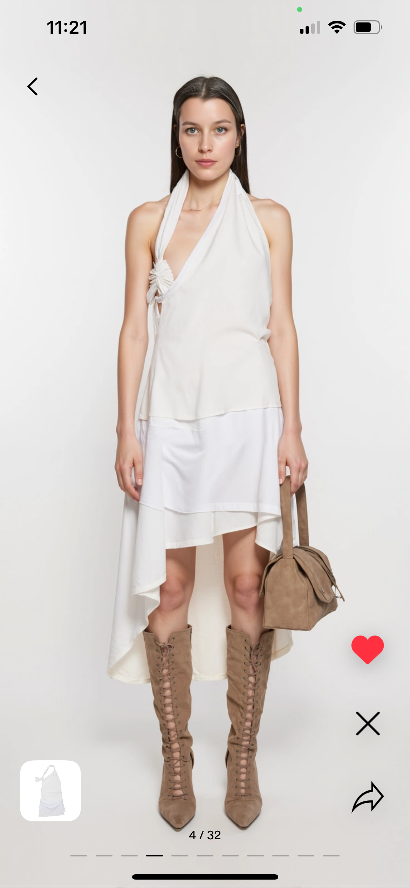
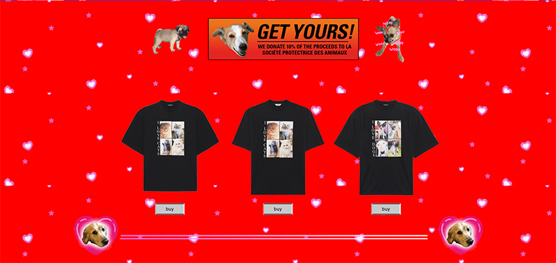
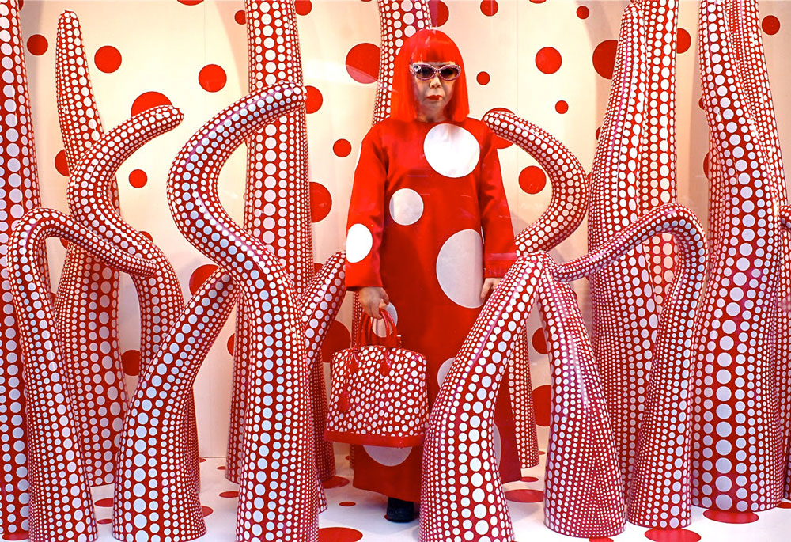
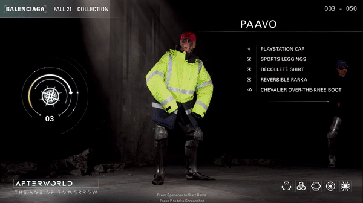
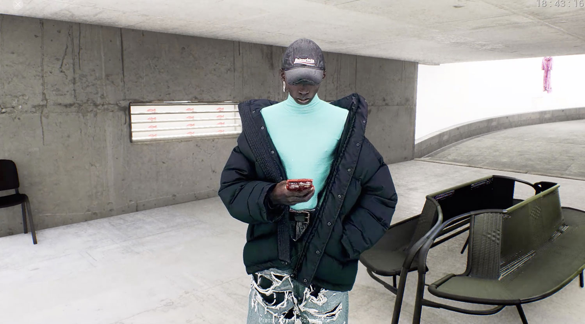
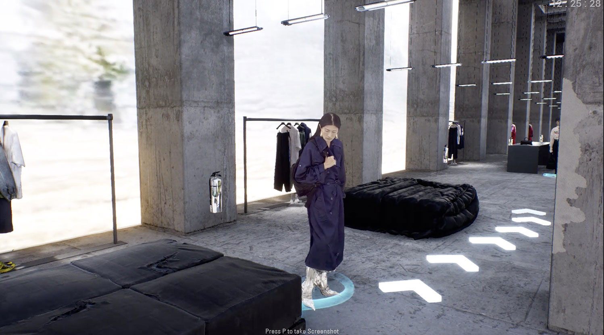
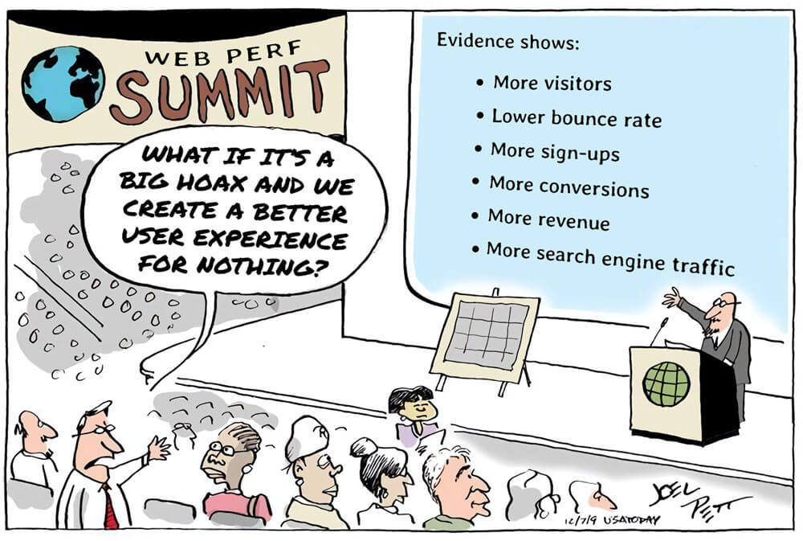

• Millennial favourite Off-White’s [founded in 2012] Virgil Abloh took over menswear creative direction at Louis Vuitton [founded 1854].
• SSENSE which has a 100 developers employed in Montreal, Canada who solely work on their website utilising the latest javascript frameworks [Vue.js] impacting site-speed and perceived loading time is a favourite fashion destination for all the cool kids who have cash to burn. They made the decision to heavily invest in their tech -- and this has payed off.
• “New” in the game [not that new] marketplaces like Farfetch and Tmall carving out a big share of sales while fashion retailers relying on traditional wholesale suffering sales year on year.
• Celine launched their first e-commerce site in 2017 [yep. 3 years!!! ago]. Before that they just had the lookbooks available to look at online. A habit that took a long time to shake for old french fashion houses.
• Chanel still doesn’t sell it’s ready-to-wear and accessories online. They only sell make-up. They are one of the only big giants still without a proper e-commerce website. They have lookbooks and product pages with prices [for certain expensive items you need to even request the price] but the ADD TO BAG button is missing everywhere.
• Givenchy didn’t have an e-commerce website until 2013 - when they outsourced it to then Net-A-Porter [now YOOX] to build it for them and where the Net-A-Porter credits showed up in Givenchy’s footer. YIKES. This is from a historic french fashion house owned by LVMH, a company that surely should have hired more people in their e-commerce team and launched their own website.
20 January 2025
A new evolution in coming to online shopping!
Google's "search by image” feature was introduced in 2011. This is a feature where users can upload an image and search for similar images. Thanks to AI this is now evolving: with Apple Intelligence users can take a picture of someone wearing a pair of shoes and Google’s image search will give you search results on where to buy them (Apparently it will be available to us in France in April).
This new use case in the luxury industry could have a big impact:
✿ Smooth Discovery: customers can instantly find and buy luxury items they like. We know that 82% of customers want AI to assist in reducing the time they spend researching what to buy. (McKinsey's State of Fashion 2025 report)
✿ Exclusivity & Brand Control: luxury brands may need to rethink control over visibility and pricing as AI changes how shoppers discover products.
✿ Personalized Client Experiences: visual search could make shopping smoother. Imagine snapping a photo in-store and instantly getting product details, styling tips and traceability info.
✿ Counterfeits: imagine if the search results bring up fake products. Nightmare for the luxury players! Brands will need to police which retailers whill show up in the search results.
As AI makes it easier to go from spotting a pair of shoes on someone on the street to buying it, brands have an opportunity to rethink how they stay desirable online (and not just in-store).
Curious to see how this unfolds! 🔎
9 January 2025
AI try-ons in luxury fashion
I came across Doji, which is launching an app where users can try on clothes and see how they would look on their actual bodies before committing to purchase. This could be a game-changer and it’s something that can be achieved with the current state of AI technology.
82% of customers want AI to assist in reducing the time they spend researching what to buy according to McKinsey. With Doji, the user needs to upload 2 full-body photographs and 8 selfies, after this the user will be able to see studio like product images with your own body, looking like you have modeled the ecommerce catalog at SSENSE (it seems like that was the intention, the AI face expressions are very telling).

Many competitors have explored virtual try-ons for shoes, eyewear, makeup, and bags, but creating realistic 3D models of leather goods and clothing has always been incredibly challenging, especially for legacy luxury brands. The process is lengthy, and the file sizes are huge, which leads to a slow user experience. The technology is also not mature enough for mainstream adoption. There are a few interesting players like DRESSX who will continue down this path. An alternative to real-time virtual try-ons is static AI-generated outfits, also known as AI try-ons. This is a great alternative, albeit using different technology. It may be sufficient to help users make purchasing decisions, while a real-time virtual try-on in 3D is more of a gamified experience.
Try-ons are not a new idea… do you remember the outfit selection in Clueless? Recently, several people have picked up the idea and tried to recreate it, but these attempts require a lengthy setup. One thing we know about online shoppers is that they want immediate results and fast delivery.

The impact this could have on online shopping is enormous. Users would save time deciding what to buy, reduce returns (and their financial and ecological impact), and generally make shopping more fun, which is something that the younger generation is expecting more.
Here is a summary of my observations after getting access to their beta app:
✿ Doji is an app that you need to download from Apple’s App Store (once it becomes publicly available).
✿ The setup is an easy and quick user experience: it asks what I wear (Womenswear/Menswear, then it asks to take 8 selfies in good light and upload 2 full body photos. If you are sitting on a sofa or in bed, you still need to take the 8 selfies but then you can select a full-body photo from your photo library.
✿ After the setup, I have to wait 30mins for the app to generate my looks.
✿ The generated looks are very impressive and in general the photos look good. I can see looks and styles which I would never wear, but it’s fun to see my alter-egos.
Next steps for this to be adopted by brands:
✿ Integrate the look generation into the brand’s website. Having a button called ‘Generate my look’ would make this a fun shopping experience helping an indecisive user to buy the item.
✿ Ask users for their height and weight and generate a more realistic body. In my generated looks I look much taller and thinner.
✿ Allow me to do the styling. I imagine this might be more time consuming (both to develop and then for the user to generate), but the experience could be more rewarding with it. Currently in Doji when I select a YSL blouse to try-on, it then generates the full look with random trousers and boots.
✿ If you ask the user to wait 30mins when they start out while they are shopping, they might never return and forget about the AI try-on. This should be improved.
✿ Be able to adapt the photographs based on the brand’s e-commerce catalog photography style. Visually it would integrate very well into e-commerce, the user could really feel like part of the brand’s culture.
We are seeing more and more tools to visualise the objects around us virtually and experiment with clothing virtually (AR VTO, 3D product visualisation, AI avatar try-on and more). It's fun and they can all co-exist. The key challenge is ensuring that users love what they see on-screen and feel just as excited when the item arrives in their mailbox.





On the images wearing: Sandy Liang white top, Alaia black dress, Jacquemus x Nike white dress, Diesel top
24 April 2024
I spent 10 days trying out the Apple Vision Pro
Here are my observations from a digital/web experience standpoint
✿ Big screens: Designing for screens larger than 30 inch is crucial given the industry’s usual focus on smaller, mobile screens due to 80% of users being mobile.
✿ Checkout process: Filling out forms and checkouts is time-consuming on the Apple Vision Pro. While not its primary function, the process should be streamlined for those who use it for this purpose.
✿ User experience: long scrolling pages are tiring...
✿ Analytics: It's unclear how many visit my site using the Apple Vision Pro as it only appears as Safari on macOS Intel in Google Analytics. Identifying it requires a better method, which I’m still exploring.
✿ 3D/AR experiences: Visualizing products in your home with AR is both fun and engaging. The high-definition environment demands equally high-quality 3D models.
In conclusion, when AR devices become consumer goods it will impact how we build digital experiences: we will need to design and build for larger screens and ensure navigation is fast with low hand gesture and eyes effort.
12 May 2022
AR and VR mass adoption is just around the corner, with Apple rumored to release their AR/VR headset by 2023
As our smartphones’s camera and processor got better over the years, our AR/VR experiences got better as well. Thanks to LiDAR built in your phone (Light Detection and Ranging technology that measures how long it takes light to reflect back from objects) we are able to see 3D models more realistically since the last 2 years.
Matthew M. Williams at Givenchy created his dream shoes the TK-360: an innovative and technical sneakers that are made out of the same durable knit material everywhere, sole included. We have introduced on givenchy.com a high-res 3D product view and you can visualize the sneakers on your iPhone in AR in your living room or at the Palais Royal. Check it out on givenchy.com
In conclusion, when AR devices become consumer goods it will impact how we build digital experiences: we will need to design and build for larger screens and ensure navigation is fast with low hand gesture and eyes effort.
10 March 2021
Bottega Veneta has left social media platforms. When will other brands follow-suit?
There was a lot of coverage when Bottega Veneta deleted themselves from social media platforms in January 2021, while Instagram and the likes are considered as big money making machines for brands. But are they really?

In 2017, Procter & Gamble cut around $200 million of its advertising spending in the digital space, due to concerns about bot fraud and brand safety. This money was reinvested in more traditional advertising channels, like television and radio. The outcome? P&G reduced its overall spending and still increased the reach of its messaging by 10%.
Is Bottega Veneta using the same strategy and investing their money in more traditional channels, like huge billboard ads, magazine ads but still covering social media by gifting to influencers? What else do they have under their hood? What we know for sure is that social media platforms are failing to truly capture attention or influence consumer behaviour. So brands have better come up with an advertising strategy where they rely less on them.
Online advertising wasn’t always bad. Today it’s pretty toxic.
While online advertising has undeniably made products & services more accessible, today it often feels like it’s the opposite - it’s making our lives more difficult. If you do a google-search today, you will see that the first two pages of results will be ads - pretty annoying. Advertising funded search-engines are biased towards the advertisers and not the needs of the consumers.
Huge part of online advertising is responsible for “attention crisis”, “deep surveillance based-profiling” and “bias toward inflammatory content”. These are all outcomes of advertising-based business models of the websites and apps we offer so many hours of our life...
It is impossible to think about the future of the web without thinking about the future of advertising. Changes in how attention is bought and sold online will have major consequences not only for our everyday experience of the web but also for self-expression, identity and democracy. We are sure you all heard the news.
Is this another financial bubble? Is it going to pop?
What if the advertising revenue from social media platforms [Instagram/Facebook👀] and search engines [Google👀] were to decline rapidly, and more brands follow the path of P&G and Bottega Veneta, withdrawing themselves from these channels? The ripple effects of such a crisis in online advertising would fundamentally change how we consume and navigate the web.
“But we can’t delete ourselves from Instagram. We need the data”
It is technically possible for brands to know that this ad was viewed by this individual, at this time, in this location. It’s possible to know if the individual has bought the advertised product. Deeper context, however, remains blurry. This matters because this opacity allows market bubbles to form.
Modern advertising is blurry for 3 reasons:
• Ever increasing automation of the marketplace.
• The creation of dark pools of liquidity where advertising inventory is bought and sold outside the public eye.
• The dominance of platforms like Facebook and Google, who have frequently introduced new layers of blurriness into the advertising marketplace.
On top of this murkiness, 56% of digital ads online are never seen by a human [according to a Google report from 2014] and the fact that people pay less attention to ads AND people love ad-blocking. $21.8 billion in global ad revenue is lost each year to ad blockers according to Adobe in 2015.
There are other ways for luxury fashion brands to reach their audience...
Today online ads fail to truly capture attention or influence consumer behaviour and it’s getting worse. So if this system collapses, what are the best alternatives?
• Less noise, more quality. Bottega Veneta’s campaigns are basically fine art photography.
• Less ads, more content. How about short films? In 2014 Prada partnered with Wes Anderson and Roman Coppola for their ads, and produced short films for the brand.
• Creative websites. Most recently in December 2020, Balenciaga created 90s inspired website for their 'I Love Pets' capsule collection. Fun.

• Video games. In 2020 Gucci has collaborated with Sims for their collection. You can dress and accessorize your sims characters with Gucci hats, backpacks and sneakers.
• Make the shopping windows into a mini-exhibition. In 2012 Louis Vuitton collaborated with Yayoi Kusama on a collection and they have transformed 24 windows of the department store Selfridges in London, making the visit to the shopping windows worthy of a museum exhibition.

FINAL THOUGHTS
The possibilities are endless. All the money brands would save from not investing into online, they can channel those into their campaigns that make an impact. Just like before online ads existed...
27 January 2021
Time for websites to go to Redesign Rehab?
Websites are in bad shape
• Between 2003 and 2019, the average webpage weight grew from about 100KB to about 4MB. The average time it takes to fully load a webpage is 10.3 seconds on desktop and 27.3 seconds on mobile.
• The causes of webpage bloat? Images, videos and 3rd party scripts are mainly to blame. You think you’re accessing one website or app, but then all these other 3rd parties start accessing you. The top 50 most visited websites have an average of 22 third-party websites hanging off them.
Why is this a problem?
• Because people hate when websites don’t perform well. Study after study shows that people absolutely hate slow web pages. In 2018, Google research found that 53% of mobile site visitors left a page that took longer than 3 seconds to load.
• And at the same time, e-commerce grew by 35%. Well we spent a year at home on the internet...
• The problem is that the conversion rate for e-commerce websites is very sensitive. A 100-millisecond delay in website load time can hurt conversion rates by 7% according to Akamai.
• In other terms, technical debt is an opportunity cost! Every penny invested in improving your e-commerce site will bring many more pennies. But for some reasons many large companies still consider that their website is an online PowerPoint and prefer to put their money in stores they happened to close due to covid. For this read our review of Prada.com and Dior.com.
The solution?
• Delete. There is a tremendous amount of out-of-date content on websites.
• Refactor. Poorly written, out-of-date code is also a major problem. By cleaning up its JavaScript code, Wikipedia estimated that they saved 4.3 terabytes a day of data bandwidth for their visitors.
• Clean up the visual language. Create a design system. Before you add any visual element, make sure that it does something useful and it’s the most optimized image possible. Work with digital agencies who think about the page weight of every design decision they make.
• Redesign is rehab for websites. Every 2-3 years some manager either gets bored with the design or some other manager meets a customer who tells them about how horrible it is to find anything on the website. A Redesign project is the perfect opportunity for the digital design/UX team to round up both top and low-level pages and for developers to ditch the spaghetti codebase.
No budget for a Redesign?
If you must do something, do something useful. That often means not doing any projects before you first: remove, minimize and clean up.
FINAL THOUGHTS
We are not an agency and don’t sell anything here at fashionweb, but we want to contribute to this rehab movement in fashion e-commerce by building a community of doers. So please send us tips, stories, articles, whatever you deem interesting to share.
Main source: Gerry McGovern's Book World Wide Waste
6 December 2020
Balenciaga created a video game for their Fall/Winter 2021 presentation
Well, it's not a real video game more like a simulation... But anyway, it's cool!

Due to covid-19 being in full swing the big brands had to think long and hard about what exactly they should do for their collection presentations. Here are the highlights:
• Prada did a “livestream” of their fashion show which ended with a Q&A with Rick Owens and Miuccia Prada. Prada’s show didn’t look like a real livestream at all, more like a high production recording that took a whole day to film. We don’t mind though, no point having a “live” livestream really.
• Burberry cleverly partnered with Twitch for their livestream.
• Jacquemus had a socially distanced show in a wheat field and livestreamed it.
• Gucci hosted their own fashion week called “GucciFest” collaborating with Gus Van Sant on their 7 part video series. Our attention span didn’t make it past the first episode unfortunately.
• Chanel had their show in a castle and they only had one guest watching the show: Kristen Stewart. Weeeeeeiiiird. We hope she tested negative...
• Celine hired out an empty football stadium in Monaco where Hedi Slimane showed his Gen-Z-friendly collection.
• Acne Studios did a neat livestream at the empty Grand Palais.
• Balenciaga on the other hand went all in and created an online videogame dedicated to their new collection - it’s something we would only expect from Demna Gvasalia.
The game is called Afterworld: The Age of Tomorrow and it’s a simulation taking you through a digital world that Balenciaga created where the characters are wearing the brand’s Fall/Winter 2021 collection. The entire simulation [we call it a simulation and not a game since you are just walking a pathway instead of playing] takes place for around 15 minutes. It starts with an intro where you roll through the “characters” like in a 90s fighting game detailing the garments in each look [check out the animated GIF above].
You then transition into a Blade Runner-esque world based in a concrete building perhaps in a big metropolitan city, where the models are showcasing the new collection while standing around, browsing on their phones or taking selfies.


You then walk through 5 zones, all zones looking apocalyptic. See this “Bringing life back to earth” ad in their game below, indicating a scary future.
There is a small story in the game and it’s very very much fitting for Balenciaga’s brand and current creative direction. We thought the story would end when we arrive to a rave in the forest, but we continued from there, bypassing models dancing high on life.
If this was a contest, hands down we would give Balenciaga the golden medal 🥇 for their spring/summer 2021 presentation.
FINAL THOUGHTS
Phew, all these brands’ Marketing and Digital departments must have been sweating hard from all that digital thinking this year. A for effort guys! We will be watching you again in 6 months.
13 July 2020
You think Fashion E-commerce is big? Well, it's just the beginning.
With Covid-19, Microsoft bragged about Teams user acquisition being “2 years of digital transformation in 2 months”. Well, for fashion, it is rather an opportunity to catch up with 10 years of e-commerce being behind with other industries. But the exploration of this potential is still shy; a lot has happened with social media for customer acquisition, but little has been achieved when it comes to online products [products being websites--not clothes]. This blog is dedicated to this fun quest.
A lot has happened in the past few months. We are in the middle of a pandemic that is shutting down retail stores and making people turn more and faster to e-commerce websites to do their shopping online. Even before Covid-19 the e-commerce sector was predicted to steadily grow - as the world’s population is getting easy access to the internet - and due to the pandemic this growth is accelerating.
Companies helping you buy and sell clothes online like Shopify and Stripe are valued billions of $$$ and brands big and small are aware how important their online presence is. Also we have witnessed a lot of fast David vs. Goliath examples:
And people like your old classmate from primary school are able to cash in as influencers just by posing in very short jeans shorts with some branded ice-tea that they are trying to sell to you, as we spend more time scrolling through ads on social media.
But this is just the beginning, with China leading the way with e-commerce being barely at 25% [as pointed out by Benedict Evans], ahead of UK and South Korea; then between 5% and 15% for USA, France, Japan and Germany; then not even 5% for Russia, Brazil, India and the rest of the world.
Luxury fashion brands have been historically behind with digital innovation.
It’s 2020. Many of these big names have been slow and very late to the game. Now people want to avoid physical contact and want to order everything online.
The 15% year-on-year growth in e-commerce with a 1.2B consumer basis is just the beginning [2018-2022 Statista data]. And at the same time, retail stores are disappearing [according to Shopify, “last year, more than 1,875 fashion retailers shut down and this year, projections reported by WWD place the number at just under 10,000...” and it was estimated before Covid-19!]. However all fashion houses slowly started to understand what is understood as prehistoric knowledge in the tech industry: that site-speed affects conversion rate, that good UX will most likely enable your customer to purchase that $30k bag, and that perhaps it’s time to switch to a more suitable platform and refactor the codebase in order to load those product pages faster... otherwise, either they risk losing sales to a marketplace, where customers shop from the same inventory but on a much better functioning website, or, let’s face it, to lose their customers at all against some tailored-for-instagram newcomers.
What is even dumber, is the comparative costs of e-commerce vs. retail stores: Nike’s venue on the Champs-Élysées costs €613M, a lease on the 5th Avenue is $2,250/squarefoot, right behind $2,2745 on Hong Kong’s Causeway Bay. As prestigious as these stores seem at their expensive locations, they represent a few points in the brands’ revenue structure, probably only a decimal. While brands are spending money on a lease and fancy painting, they keep their e-commerce team headcount to the bare minimum: interns managing the platform even if it already brings 10-50% of the revenue stream... or during a pandemic shutdown this revenue jumps to 100%. And if you say such venues are important in terms of brand image and marketing, well... what would you say about a well-functioning website? Why is there such a discrepancy in efforts between retail and e-commerce, if it’s not by ignorance?

This post is an introduction, it is not meant to dig in a specific topic. But as you are here already, let me tell you my first principle:
Forget fancy UI.
Creative web designs are becoming less common as the web is moving closer to a shared design language and best practices are being freely shared by the amazing web dev community: which one hand makes websites look more homogeneous while on the other hand enforces more good UX. The latest design trend is to have no design at all, as this great article points out: GOOD UX = BORING UI.
One big reason behind this principle is that: You are not the user.
According to this research computer literacy is very low amongst the population “across 33 rich countries, only 5% of the population has high computer-related abilities, and only a third of people can complete medium-complexity tasks.” While it may be easy for you to buy your weekly groceries online, a lot of other people have trouble using a computer, the internet and technology in general. Which is totally fine. We just need to make sure we make shopping easy for everyone on the web.
Resources, articles and how-tos on webdev and e-commerce can be found in abundance online since the webdev community shares freely best practices, code snippets and learnings from previous projects while working at Big Tech companies or startups however when you look at the fashion industry and it’s digital sector, not much has been said or shared. fashionweb.io is a place to stay up-to-date on all things digital in the fashion industry: creative or not-so-creative web designs, good and bad UX, new tech to use to achieve fast site-speed, best and worst practices or just check out some new fashion websites for inspiration for those who want to launch their new e-commerce site in fashion.
Hello world!